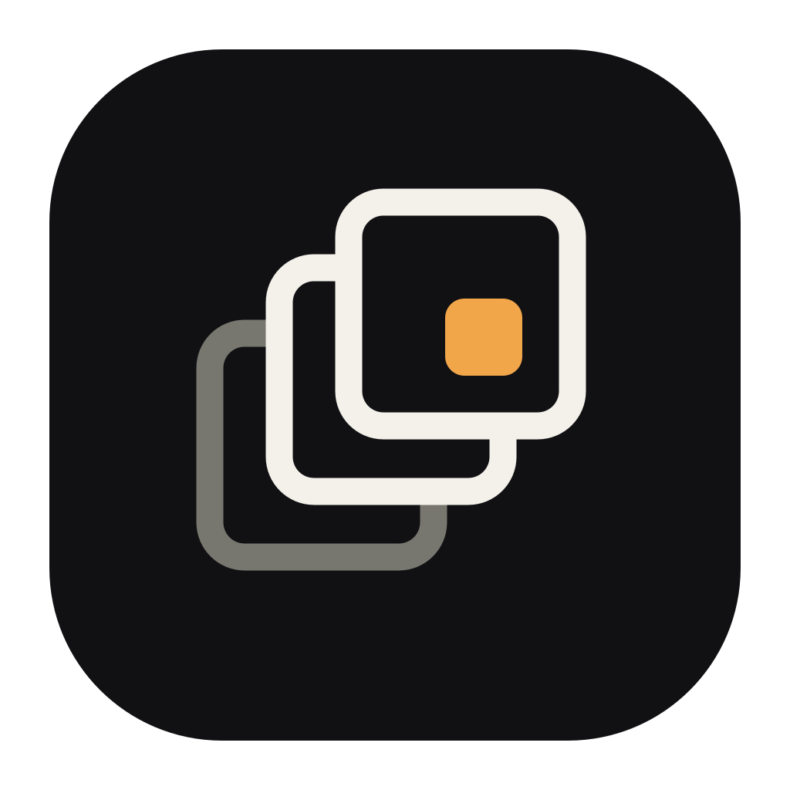

Different ideas. Same brief.
Arrival remains the benchmark, not the template. The other three concepts begin from different artifacts—stage blocking, multiplane image-making, and a gathered audience—and build their own silhouettes and systems.

MultiplaneLayers · revealAlumni Sans, PT Sans, the dark theater, and one amber accent are fixed controls. Compare the idea, mark silhouette, small-size behavior, and how each system enters product UI.
Arrival
A planned score reaches its consequential cue. The longest event changes from neutral to first light.
Why it belongsIt expresses orchestration directly and reads instantly at every size.
Honest riskIt can still be mistaken for an equalizer without the wider system.
 Uzume
UzumeOpening sequence
Tuesday · Studio A
Blocking
A performance is not a waveform; it is movement deliberately plotted through time and space. Five positions form one route, with light appearing only at its resolved endpoint.
Mythic mechanismOmoikane’s plan becomes choreography; emergence is earned by completing it.
Honest riskThe connected nodes can drift toward mapping or analytics if the route loses its stage-like irregularity.
Performance map
Five cues · one arc
Multiplane
Uzume’s repertoire is prepared as visual planes, not a single reactive surface. The layers separate and a small field of first light becomes visible between them.
Mythic mechanismA dark world is rearranged in advance so light has somewhere to appear.
Honest riskStacked frames are familiar in creative software; the diagonal separation and amber reveal must stay proprietary.
Visual repertoire
Prepared before playback
Gathering
Five presences turn toward an open center. One returns as first light: not a sun symbol, but attention transformed by performance.
Mythic mechanismThe gathered audience is essential to the Iwato story; light returns because the performance becomes impossible to ignore.
Honest riskRadial geometry can resemble a flower or aperture if the asymmetric weights are over-smoothed.
Shared attention
The room turns together
Now the concepts disagree.
Arrival is no longer competing with cosmetic variants. Each alternative makes a different claim about what Uzume fundamentally is.